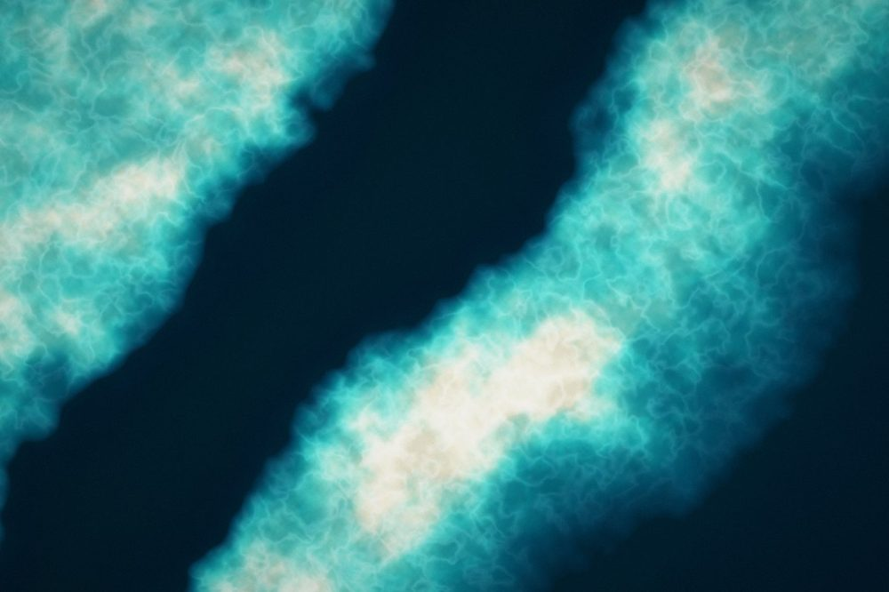
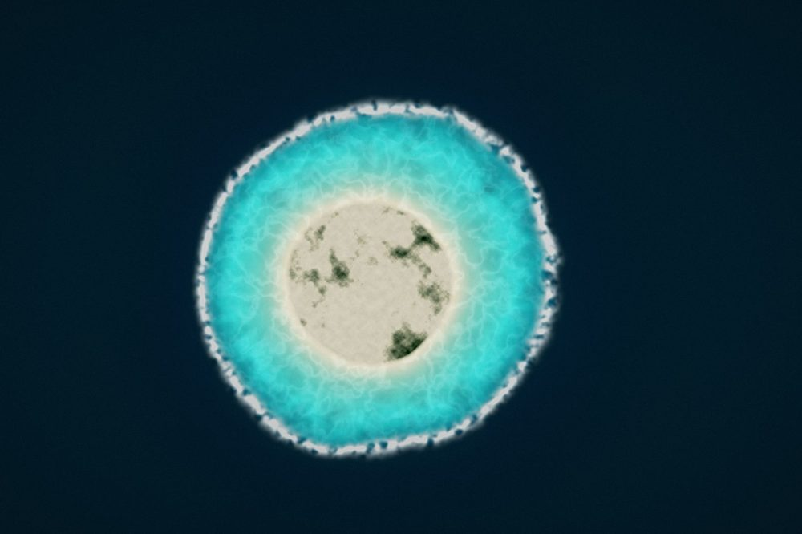
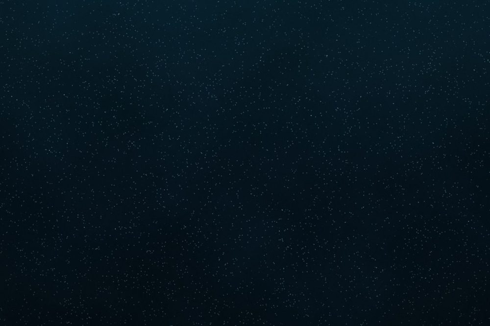
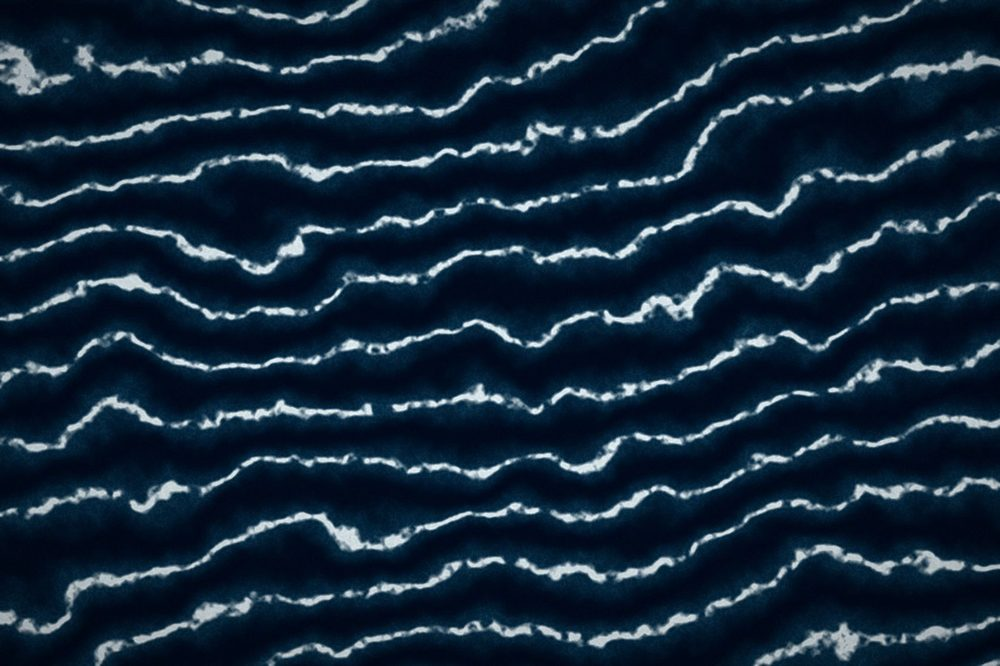
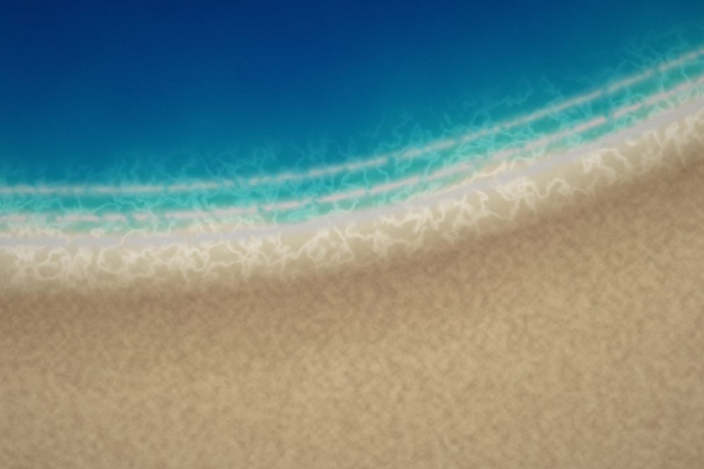
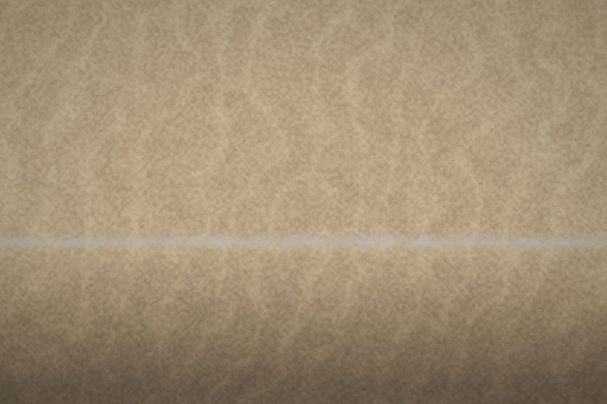
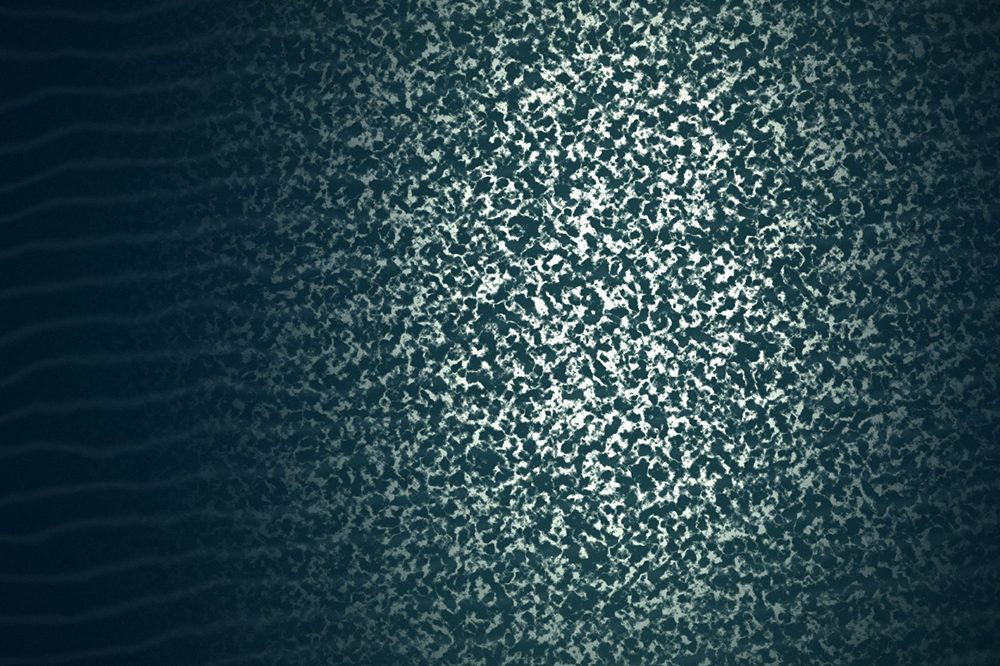
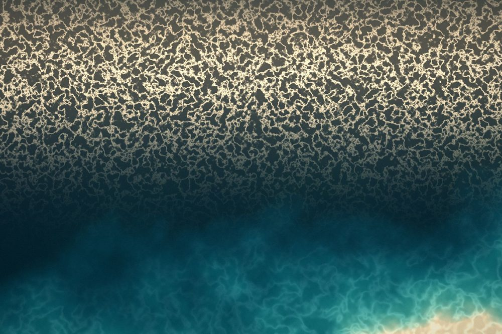

The ocean is not a resource. It is the older institution.
Twelve chapters, one descent.

Older than the ground it sits on.
Four billion years of unbroken service.
There is a low ridge in Western Australia called Jack Hills, and inside that ridge are crystals of zircon small enough that you could lose a dozen of them in the crease of your palm. They are the oldest known fragments of this planet, roughly 4.4 billion years old, and locked inside them is a chemical signature that only forms when rock meets liquid water.
Which is a quiet way of saying something enormous. The Earth is about 4.54 billion years old. The water arrived almost immediately. Before the continents settled into their current arrangement, before the first cell, before oxygen, before anything that could reasonably be called a landscape, there was an ocean.
We tend to talk about the sea the way we talk about a national park, as though it were a feature the planet acquired and we now administer. The order of events says otherwise. Every mountain range you can name has been assembled and worn flat inside the lifetime of that water. The ocean is not part of the estate. The ocean is the estate. We are the tenants who arrived late, made a great deal of noise, and began describing the landlord as a resource.
Hold that inversion, because everything that follows depends on it. This is not a study about saving the ocean. It is a study about what the ocean has been doing for us, unasked and unbilled, since long before we existed, and what it might mean to answer in kind.

The most important organism on Earth was invisible until 1988.
In the mid 1980s a biological oceanographer at MIT named Sallie Chisholm was running seawater through a flow cytometer, an instrument borrowed from medical laboratories that counts cells by firing a laser at them one at a time. She kept finding a signal she could not account for. Something in the water was fluorescing. Something extremely small, and extremely numerous.
It turned out to be a photosynthetic bacterium roughly half a micron across, so small it had been slipping through every net and filter oceanography had ever used. They named it Prochlorococcus . It is now understood to be the most abundant photosynthetic organism on the planet, with a global population on the order of a billion billion billion cells, and by some estimates it accounts for as much as a fifth of the oxygen in the atmosphere.
Take a breath. Then take another. One of those, near enough, came from the sea, from phytoplankton drifting in sunlit water, of which this one invisible genus is the quiet majority shareholder.
Here is the part worth sitting with. It was not hiding. It was in every sample anyone had ever taken, for a hundred years of oceanography. We could not see it because our instruments had holes too big, and we had assumed, reasonably enough, that anything that mattered would be large enough to catch.
That assumption is not confined to marine biology. We run the same arithmetic on people, and on kindness. We measure what our instruments are shaped to catch, the large gift, the named building, the campaign with a total on a banner, and we conclude that those are the things holding up the world. The ocean's answer is that the load is almost always carried by something too small to have made the news.

The night the seafloor started rising.
In 1942, United States Navy sonar operators working off the California coast reported something impossible. Their instruments showed a solid bottom at around three hundred metres, in water charted at thousands. Stranger still, the bottom moved. It climbed toward the surface at dusk and sank again at dawn.
They called it the phantom bottom. It was not a bottom. It was animals, uncountable numbers of small fish, squid, krill and jellies, packed densely enough to bounce sound back like rock. Every evening they rise hundreds of metres to feed in the dark surface water, and every morning they descend again to hide from the light.
It is the largest movement of living matter on Earth, it happens twice a day, everywhere, and nobody noticed until a war effort accidentally pointed a listening device at the middle of the water column.
Notice how the discovery arrived. Not through curiosity, but as an error. The most significant daily event in the biosphere first entered the human record as a fault in the equipment, something to be corrected before the real work could continue.
Most of what the world does for us is filed the same way. As background. As noise in the reading. As something that does not need accounting for, because it has never once failed to happen.
A whale dies and a town is built.
In 1987 a marine ecologist named Craig Smith was steering the submersible Alvin across the floor of the Santa Catalina Basin when his lights found the skeleton of a grey whale. It was not a bone yard. It was a settlement. Thousands of animals were living on it, in it and off it, many of them species nobody had yet described.
A whale fall runs on a schedule. Scavengers strip the flesh over months. Worms and crustaceans work the scraps for years. Then bacteria break down the lipids inside the bones themselves, releasing sulphides that support chemical based communities for decades. An entire economy, on one body, thousands of metres below the last of the light.
The generosity does not begin at death either. Whales feed at depth and return to the surface to breathe, carrying nutrients upward into sunlit water where phytoplankton can use them. Biologists call it the whale pump. The largest animals in the ocean spend their lives fertilising the smallest, which in turn make the oxygen the largest animals breathe.
None of this is charity in the sentimental sense. It is a design in which no participant is permitted to be a terminus. Everything received is passed along, generally to something that will never know where it came from. The most efficient system on Earth is anonymous, and it moves in chains.
The subsidy nobody negotiated.
A system that has given without accounting for four billion years is not owed our admiration. It is owed our restraint.


A beach is not a place. It is an argument, still in progress.
Pick up a handful of sand on any beach you love. Most of those grains began as mountain. They were split by frost, ground by rivers, carried down valleys over thousands of years, sorted by size in the surf, and delivered to precisely this line, where the ocean sets them down and picks them up again twice a day.
Nothing about that line is permanent. A beach is the running score of a negotiation between rock, river and wave, and the shape you photographed last summer is one frame of it. Coastlines are beautiful partly because they are the only landscape that visibly rewrites itself on a human timescale.
Which explains the peculiar grief people feel about a coast they have known since childhood. It has not been ruined so much as interrupted. Seawalls, dredging, dams that hold back the sediment rivers used to carry down: we have not spoiled the beach so much as cut off its supply line, upstream and out of sight.
The lesson repeats at every scale. The damage that matters is rarely done at the place you love. It is done to the thing that feeds it.

Ten places, and why each still exists.
The town that stopped fishing.
By the early 1990s the reef at Cabo Pulmo, on the eastern shore of the Baja peninsula, was finished. Two generations of fishing had emptied it. The families there, a settlement of well under two hundred people, had two obvious options. Keep fishing a dying reef, or leave.
They took a third. Working with scientists from the university in La Paz, they asked the Mexican government to make the reef a national park, and in 1995 it was declared. Then they did the part that makes the story unusual. They stopped fishing it themselves. Not partially, and not on paper. Eventually the entire park went no take, and the people with the most to lose became the ones who enforced it.
In 1999, researchers surveyed sixty reefs across the Gulf of California, Cabo Pulmo among them. At that point the park was unremarkable. Fish biomass there was statistically no different from unprotected water nearby. Four years of protection had produced nothing anyone could measure.
They came back in 2009 and ran the survey again. Total fish biomass inside the park had increased by 463 per cent. The biomass of top predators, the sharks and groupers and jacks that vanish first from a fished reef, had risen roughly elevenfold. The researchers rechecked their numbers before publishing, because nothing on that scale had been recorded in a marine reserve anywhere.
Two details matter more than the headline. The first is that other protected areas in the same gulf, with the same laws and better funding, showed no significant recovery at all over the same decade. Legal protection was not the active ingredient. Social protection was. The rules worked because they were enforced by people who would have to explain themselves at dinner.
The second is what happened to the families. Fish do not respect a boundary line, and a full reef spills over into the water around it. The dive economy arrived. The people who gave up the reef ended up with more from it than they surrendered, though it took roughly a decade, which is long enough that nobody could have promised it to them in advance.
That last clause is the whole study. They could not have known. They acted on a reef that showed no improvement for years, on the word of scientists, against their own short term interest, and the return arrived long after the decision that produced it. Which is the actual shape of generosity, as opposed to the shape we prefer to imagine: a delay, a period of looking foolish, and a compounding you cannot see while it is happening.
Restraint, it turns out, is a form of giving. It is simply the form that leaves no photograph.
Who stands between the sea and the obvious use of it.

Half the planet just got a guardian.
Beyond the two hundred nautical mile limit of any country's waters lies the high seas: roughly two thirds of the ocean, close to half the surface of the Earth, and for the whole of modern history a place where almost nothing was legally anyone's responsibility.
In June 2023, after nearly two decades of negotiation, United Nations member states adopted an agreement on marine biodiversity in areas beyond national jurisdiction. It needed sixty ratifications to take effect. The sixtieth arrived in September 2025, and on 17 January 2026 the treaty entered into force, with more than eighty countries party to it by that date.
For the first time there is a legal mechanism to create protected areas in international waters, to require environmental assessment before industrial activity there, and to share the benefits of what is found. It sits alongside the global commitment to protect thirty per cent of land and sea by 2030, against a present reality in which less than a tenth of the ocean holds any protected designation, and only a small fraction of that is genuinely off limits.
Treaties do not restore reefs. Cabo Pulmo restored a reef, and it did so with no budget worth mentioning. What a treaty does is make local decisions like that one legal, defensible and worth making. The law is the container. People are still the contents.

Everything alive is sunlight, held in water.
Strip the biology back far enough and there are only two ingredients. Light arrives from a star. Water catches it, holds it, moves it around, and refuses to let it leave quickly. Every calorie in your body was once a photon that a plant or a plankton persuaded to stay.
Water is peculiarly good at this. It takes an unusual amount of energy to warm it, and it gives that energy up slowly, which is why the sea acts as the planet's flywheel: absorbing heat at the equator, carrying it poleward in currents, releasing it into winters that would otherwise be unliveable. Coastal climates are mild for the same reason a stone wall stays warm after sunset.
And it moves. Cold, salty water sinks in the far north and far south and drags a global circulation behind it that can take a thousand years to complete a lap. The rain that fell on a farm in July was ocean surface some weeks earlier. There is no such thing as a separate water supply. There is one body of water, temporarily distributed, and we are a brief arrangement of it that has learned to worry.
Which makes the standard framing of environmental duty sound slightly off key. We are not stewards of a system we sit outside. We are a late and elaborate expression of it, made of the same water, running on the same star, borrowing both. Giving back to the ocean is not altruism toward a stranger. It is maintenance of the thing we are made of.
What one person can actually put back.
The sea has never once kept what it was given. Everything it receives, it passes on, usually to something that will never learn where it came from.
That is the oldest method of generosity on this planet, and it has been running without interruption or acknowledgement for four billion years. Anyone is free to join it. The entry requirement is a single act, given away, and not signed.